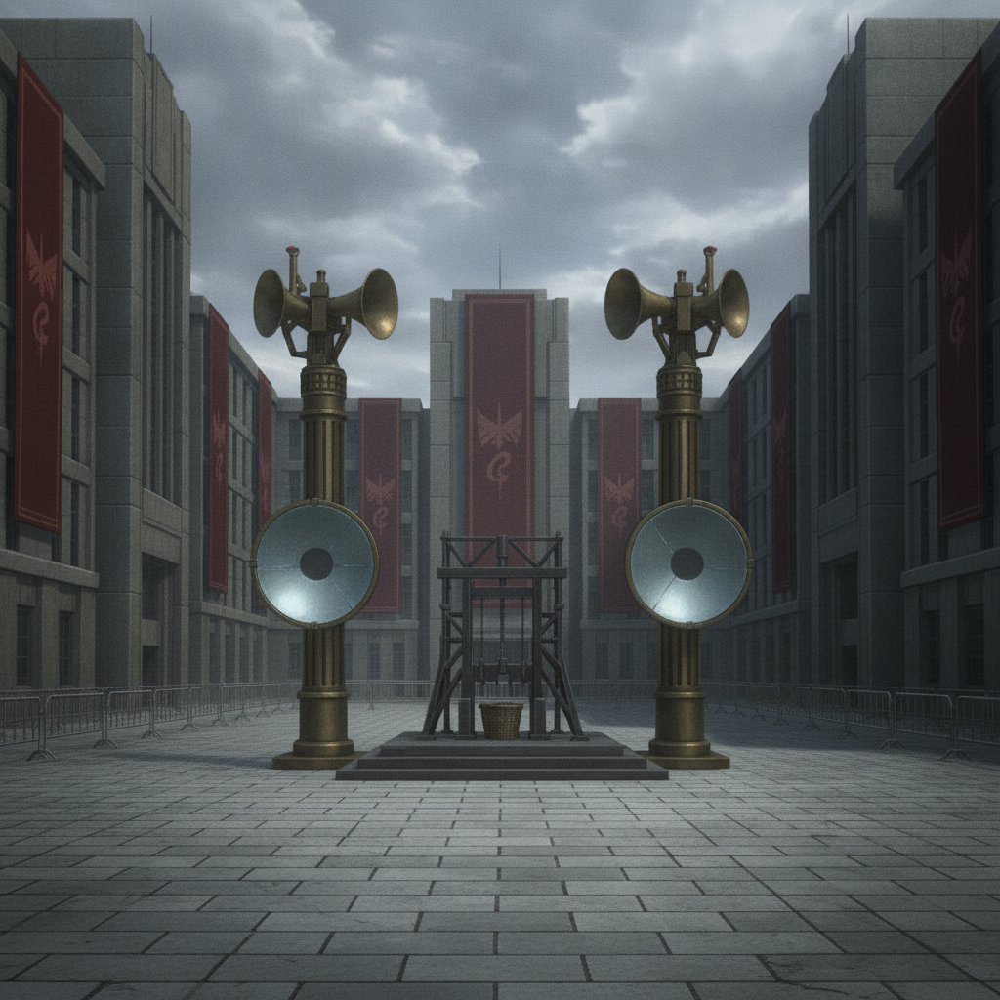

The execution square. I witness it all. Not through a crackling broadcast, but in person, from the shadows. The cold efficiency. The public spectacle of terror. The faces of our friends, our cohort, contorted in a final, silent scream.
It breaks something in me. Something fundamental.
I gave my heart to no one. Kept all four at a careful distance. And for what? So the world could pick them off, one by one?
No. I will lose *none* of them.
The refusal to choose becomes a refusal to lose. And the world that killed them will answer. I no longer hunt the truth to survive. I hunt it to punish.